무선설비기사 (2013-10-12 기출문제)
1과목: 디지털 전자회로
1. 반파정류회로를 사용한 전원설비를 전파정류회로로 변경하면 리플률은 어떻게 변화되는가?
- 약 1.5배 증가한다.
- 약 2.5배 감소한다.
- 약 3.5배 증가한다.
- 약 4.5배 감소한다.
(정답률: 72%)

2. 정류회로 출력 성분 중 교류인 리플을 제거하기 위해 정류회로 다음 단에 접속되는 회로는 무엇인가?
- 평활 회로
- 클램핑 회로
- 정전압 회로
- 클리핑 회로
(정답률: 83%)
3. 다음 중 정전압 회로의 안정도 파라미터에 해당되지 않는 것은?
- 전압안정계수
- 온도안정계수
- 출력저항
- 출력직류전압
(정답률: 53%)
4. 다음 주어진 회로에서 점선으로 표시된 회로의 기능이 아닌 것은?
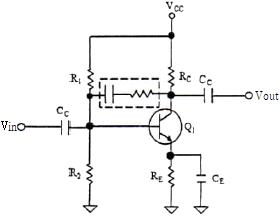
- 증폭 이득을 조절할 수 있다.
- 입출력 임피던스를 조절할 수 있다.
- 대역폭을 조절할 수 있다.
- 온도 특성을 조절할 수 있다.
(정답률: 82%)
5. 다음 중 FET(Field Effect Transistor) 대한 설명으로 옳지 않은 것은?
- 입력저항이 수 [MΩ]으로 매우 크다.
- 다수 캐리어에 의해 동작하는 단극성 소자이다.
- 접합트랜지스터(BJT)보다 잡음이 심하다.
- 이득대역폭이 좁다.
(정답률: 79%)
6. 그림과 같은 에미터폴로우 회로에서 h-파라메타가 hie=2.1[kΩ], hfe=100이고, R1=10[kΩ], R2=10[kΩ], Re=4[kΩ]일 때, 입력저항은 약 얼마인가?
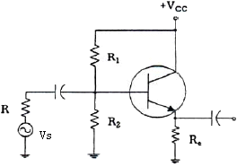
- 402[kΩ]
- 404[kΩ]
- 406[kΩ]
- 408[kΩ]
(정답률: 52%)
7. 다음과 같은 연산증폭기 회로의 출력 전압은?
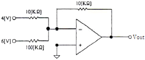
- -64[V]
- -4.6[V]
- +64[V]
- +4.6[V]
(정답률: 83%)
8. 다음 중 발진조건에 대한 설명으로 틀린 것은?
- 궤한증폭기의 이득(A)과 궤환율(β)의 곱이 1보다 작으면 발진 진폭이 감소한다.
- 궤환증폭시 입력신호와 궤환신호의 위상이 180° 차이가 난다.
- 증폭된 출력의 일부를 입력쪽으로 정궤환시켜야 한다.
- 발진이 지속될 수 있는 상태를 유지하기 위해서는 βA=1 조건을 만족해야 한다.
(정답률: 73%)
9. 수정발진기는 어떤 효과를 이용한 것인가?
- 차폐효과
- 압전기 효과
- 홀 효과
- 제에벡 효과
(정답률: 76%)
10. 다음 중 위상변조에 대한 설명으로 틀린 것은?
- 위상을 변조신호에 의해 직선적으로 변하게 하는 방식이다.
- 변조지수는 위상감도계수에 비례한다.
- PM방식을 사용하여 FM신호를 만들 수 있다.
- 반송파를 중심으로 3개의 측파대를 가지며 그 크기는 변조지수에 관계된다.
(정답률: 53%)
11. 펄스부호변조(PCM) 방식에서 아날로그 신호를 디지털 신호로 변환시키는 과정을 바르게 나타낸 것은?
- 표본화 → 양자화 → 부호화 → 압축
- 표본화 → 부호화 → 양자화 → 압축
- 표본화 → 양자화 → 압축 → 부호화
- 표본화 → 압축 → 양자화 → 부호화
(정답률: 60%)
12. 다음 그림과 같은 주기적인 펄스파형의 듀티비(Duty Ratio)는 얼마인가? (단, to=30[μs], T=150[μs])
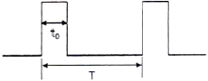
- 10[%]
- 12[%]
- 20[%]
- 22[%]
(정답률: 80%)
13. RC 회로의 출력에서 최종치의 10[%]~90[%]까지 얻는데 소요되는 시간을 무엇이라 하는가?
- 지연 시간
- 하강 시간
- 상승 시간
- 전이 시간
(정답률: 86%)
14. 십진수 10.375를 2진수로 변환하면?
- 1011.101(2)
- 1010.101(2)
- 1010.011(2)
- 1011.110(2)
(정답률: 80%)
15. 다음 그림에서 정논리의 경우 게이트 명칭은?
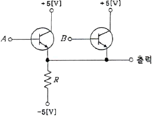
- AND 게이트
- OR 게이트
- NAND 게이트
- NOR 게이트
(정답률: 84%)
16. 플립플롭은 몇 개의 안정 상태를 갖는가?
- 1
- 2
- 4
- ∞
(정답률: 73%)
17. 조합 논리 회로 중 0과 1의 조합으로 부호화를 행하는 회로로 2n개의 입력선과 n개의 출력 선으로 구성된 것은?
- 디코더(Decoder)
- DEMUX
- MUX
- 인코더(Encoder)
(정답률: 77%)
18. 플립플롭 4개로 구성된 계수기가 가질 수 있는 최대의 2진 상태는 몇 가지인가?
- 8가지
- 12가지
- 16가지
- 20가지
(정답률: 83%)
19. 다음 회로는 어떤 회로인가?
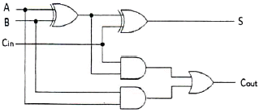
- 반가산기 2개와 OR게이트를 이용한 전가산기 회로
- 반가산기 3개와 OR게이트를 이용한 전가산기 회로
- 반가산기 2개와 NOR게이트를 이용한 전가산기 회로
- 반가산기 3개와 NOR게이트를 이용한 전가산기 회로
(정답률: 73%)
20. 다음 중 계수형 전자 계산기(Digital Computer)의 보조 기억 장치가 아닌 것은?
- 자기 드럼(Magnetic Drum)
- 자기 테이프(Magnetic Tape)
- 자기 디스크(Magnetic Disk)
- 자기 코어(Magnetic Core)
(정답률: 79%)
2과목: 무선통신 기기
21. 이득 및 잡음지수가 각각 G1, G2,…와 F1, F2,…인 부품들이 직렬로 연결되어 있을 때, 전체 잡음지수는 어떻게 되는가?
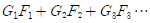
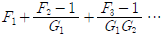
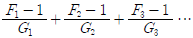
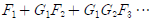
(정답률: 84%)
22. AM에서 가장 좁은 대역폭을 사용하는 것은?
- DSB-SC
- DSB-TC
- VSB
- SSB
(정답률: 83%)
23. 정보신호가 m(t)=cos(2πfmt)인 정현파를 반송파 fc를 사용하여 SSB변조하는 경우 변조된 신호의 스펙트럼을 모두 나타낸 것은?
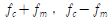
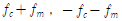
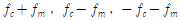
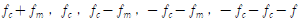
(정답률: 72%)
24. ASK와 BPSK를 비교하여 설명한 것으로 틀린 것은?
- 단극성 NRZ 신호를 DSB 변조한 것은 ASK이다.
- 양극성 NRZ 신호를 DSB 변조한 것은 BPSK이다.
- ASK와 BPSK의 신호의 전력 스펙트럼은 다른 모양을 갖는다.
- ASK 신호의 스펙트럼에는 직류성분이 있고, BPSK 신호의 스펙트럼에는 직류성분이 없다.
(정답률: 58%)
25. 다음의 그림에 나타난 성상도는 어떤 변조방식에 대한 성상도인가?
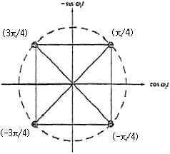
- BPSK
- QPSK
- 8PSK
- 16PSK
(정답률: 85%)
26. 다음 중 FSK 방식에 대한 설명으로 옳은 것은?
- 2진 정보를 AM 변조한 것
- 2진 정보를 FM 변조한 것
- 2진 정보를 PM 변조한 것
- 2진 정보를 PCM 변조한 것
(정답률: 89%)
27. 다음 중 디지털송신설비에 대한 설명으로 틀린 것은?
- 적은 전력으로 광범위한 서비스지역을 확보할 수 있다.
- 전계강도가 낮은 지역도 선명한 화질을 얻는다.
- 디지털 송신설비는 좁은 면적에 시설할 수 있다.
- 디지털 송신설비는 단순한 편이나 운용비용이 비싸다.
(정답률: 80%)
28. 다음 중 레이더 시스템의 구성요소가 아닌 것은?
- 송신기(transmitter)
- 수신기(receiver)
- 안테나(antenna)
- 블랙박스(black box)
(정답률: 93%)
29. 다음은 GPS를 설명한 것이다. 잘못된 것은?
- 여러 개의 위성으로부터 시간 정보를 받는다.
- GPS 수신기는 위성의 위치에 대한 데이터를 받는다.
- 삼각 측량법에 의해 자신의 위치를 계산하는 원리이다.
- GPS 서비스는 다수의 위성 중 4개 이상의 위성으로부터 정보를 받는다.
(정답률: 78%)
30. 다음 중 ILS의 구성요소가 아닌 것은?
- Localizer (방위각 제공 시설)
- Glide Path (활공각 제공 시설)
- MLS (초고주파 착륙 시설)
- Marker Beacon (마커 비콘)
(정답률: 86%)
31. 다음 중 축전지 용량 감퇴의 직접적인 원인이 아닌 것은?
- 충전 전류나 방전 전류의 과다
- 충전의 불충분
- 백색 황산 납의 발생
- 장기간 사용
(정답률: 79%)
32. 다음 중 태양전지의 최대 전력량을 생산하기 위한 컨트롤 기술은?
- 접지기술
- 솔라셀 설치 기술
- 인공강우기술
- 인버터 컨트롤기술
(정답률: 78%)
33. 다음 중 전원을 일정시간 동안 공급할 수 있는 장치는?
- Transfomer
- AVR
- Converter
- UPS
(정답률: 89%)
34. 정류회로에서 직류전압이 200[V]이고, 리플전압이 2[V]라면 맥동률(리플)은 얼마인가?
- 1[%]
- 2[%]
- 5[%]
- 10[%]
(정답률: 87%)
35. 다음 중 상호변조의 방지대책에 해당되지 않는 것은?
- 증폭기를 비선형 영역에서 동작시키지 않는다.
- 필터를 이용하여 통과대역 밖의 신호를 잘라낸다.
- 다중화 방식으로 FDM을 사용한다.
- 입력신호의 레벨을 너무 크게 하지 않는다.
(정답률: 75%)
36. 수신기의 안정도는 수신기를 구성하는 어떤 요소의 주파수 안정도에 의해 결정되는가?
- 동조회로
- 고주파 증폭기
- 국부 발진기
- 검파기
(정답률: 83%)
37. 반사계수가 0.2 일 때 정재파비는 얼마인가?
- 1.0
- 1.5
- 2.0
- 2.5
(정답률: 85%)
38. 안테나 실효고 측정방법중의 하나인 표준 안테나에 의한 방법에서 표준 안테나로 주로 사용되는 안테나는?
- 롬빅 안테나
- 야기 안테나
- 루프 안테나
- 브라운 안테나
(정답률: 86%)
39. 평활회로는 어떤 필터의 역할을 수행하는가?
- LPF
- HPF
- BPF
- BEF
(정답률: 87%)
40. 다음 중 전지의 내부저항을 측정하기 위해 사용되는 브리지로 적합한 것은?
- 맥스웰(Maxwell)브리지
- 헤이(Hey)브리지
- 헤비사이드(Heaviside)브리지
- 코올라우시(Kohlrausch)브리지
(정답률: 84%)
3과목: 안테나 공학
41. 평면파의 설명으로 잘못된 것은? (단, ε0 : 진공의 유전율, μ0 : 진공의 투자율, εs : 비유전율, μs : 비투자율, c : 빛의 속도)
- 공중선으로부터 방사된 전파는 공중선 부근에서는 구형파이지만 상당히 먼거리에서는 평면파로 된다.
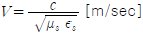
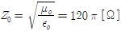
- 진행 방향에 대해서 전계와 자계가 서로 180[°]를 이룬다.
(정답률: 89%)
42. 자유공간에서, 전파가 20[μs] 동안 전파되었을 때 진행한 거리는 어느 정도인가?
- 2[km]
- 6[km]
- 20[km]
- 60[km]
(정답률: 90%)
43. 자유 공간의 특성 임피던스는 근사치로 약 얼마인가?
- 60[Ω]
- 75[Ω]
- 377[Ω]
- 600[Ω]
(정답률: 92%)
44. 다음 중 비 동조 급전선의 설명으로 옳지 않은 것은?
- 급전선의 길이는 사용파장과 일정한 비례관계를 갖지 않는다.
- 급전선상에 정재파가 없고 진행파만 존재한다.
- 정합장치가 필요하다.
- 전송효율이 동조 급전선보다 나쁘다.
(정답률: 70%)
45. 다음 중 급전선의 필요조건이 아닌 것은?
- 송신용일 때는 절연내력이 클 것
- 급전선의 파동 임피던스가 높을 것
- 전송효율이 좋을 것
- 유도방해를 주거나 받지 않을 것
(정답률: 82%)
46. 마이크로파 송신기의 전력 측정에 사용되는 방향성 결합기로 측정할 수 없는 것은?
- 정재파비
- 위상차
- 반사계수
- 방향성
(정답률: 78%)
47. 그림은 λ/4 결합기를 나타낸 것이다. 알맞은 조건식은?
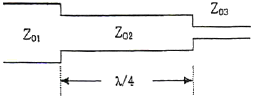
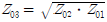
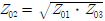
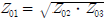
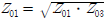
(정답률: 81%)
48. 다음 중 정재파에 대한 설명으로 맞지 않는것은?
- 한 방향으로 진행하는 파이다.
- 정합이 되어 있지 않았을 때 생긴다.
- 정재파가 크면 클수록 전송 손실이 크다.
- 전류 전압의 위상은 선로상 어느 점에서도 동일하다.
(정답률: 85%)
49. 미소다이폴을 수직으로 놓았을 때 수평면의 지향성 계수는?
- 1
- 2
- 1.5
- 2.5
(정답률: 79%)
50. 안테나 Q(Quality Factor)의 파라미터에 해당하지 않는 것은?
- 선택도
- 첨예도
- 양호도
- 안정도
(정답률: 57%)
51. 방사효율이 0.7인 안테나에서 손실전력이 3[W]일 때, 이 안테나에서 방사되는 전력은?
- 4[W]
- 7[W]
- 10[W]
- 12[W]
(정답률: 65%)
52. 전송선로의 특성에 의한 분류 중 전자계모드의 분류로 옳지 않은 것은?
- 평형형
- 동조형
- 도파관형
- 불평형형
(정답률: 61%)
53. 다음 중 절대이득을 측정할 수 있는 표준형 안테나로 사용 할 수 있는 안테나는?
- 혼(Horn) 안테나
- 웨이브(Wave) 안테나
- 루프 안테나
- 롬빅 안테나
(정답률: 81%)
54. 다음 중 다중 접지방식에 대한 설명으로 틀린 것은?
- 한 점의 접지만으로는 불충분한 경우, 여러 점을 직렬로 접속하여 접지 저항을 줄이는 방식이다.
- 안테나 전류가 기저부 부근에 밀집하는 것을 피하고 접지저항을 감소시키기 위해 사용한다.
- 접지 저항은 1~2[Ω] 정도이다.
- 대전력 방송국의 안테나 접지에 이용한다.
(정답률: 82%)
55. 송ㆍ수신점간의 거리가 정해졌을 때 LUF를 결정하는 요인과 거리가 먼 것은?
- 전리층의 높이
- 송수신 안테나 이득
- 수신점에서의 잡음 강도
- 통신방식
(정답률: 66%)
56. 지표면에서 전리층을 향해 수직으로 펄스파를 발사한 후 2[ms] 후에 생기는 반사파는 어느 전리층에서 반사한 것인가?
- D층
- E층
- Es층
- F층
(정답률: 86%)
57. 신틸레이션 페이딩에 대한 설명 중 틀린 것은?
- 대기 중의 산란파와 직접파의 간섭에 의해 발생되는 페이딩이다.
- 전계 변동 폭은 파장이 짧을수록 크게 된다.
- 여름보다 겨울에 많이 발생한다.
- 방지대책으로 AGC(자동이득조절회로)를 사용한다.
(정답률: 70%)
58. 다음 중 우주잡음에 대한 설명으로 틀린 것은?
- 태양잡음은 태양의 흑점폭발 등과 같은 열교란에 의해 발생한다.
- 은하잡음은 200[MHz] 이상의 주파수를 사용하는 통신에 문제가 된다.
- 태양잡음을 관측하여 자기폭풍이나 델린져 현상의 예보에 이용할 수 있다.
- 우주잡음은 태양잡음과 은하잡음으로 분류할 수 있다.
(정답률: 85%)
59. 지표파 전파의 특징과 관계없는 것은?
- 지표면 요철에 큰 영향을 받지 않는다.
- 대지의 도전율이 클수록 멀리 전파한다.
- 주파수가 높을수록 멀리 전파한다.
- 수직편파가 잘 전파한다.
(정답률: 68%)
60. 라디오 덕트를 발생시키는 원인으로 볼 수 없는 것은?
- 육상의 건조한 공기가 해상으로 흘러 들어갈 때
- 야간의 지표면 쪽의 공기가 상층부의 공기보다 빨리 냉각될 때
- 고기압권에서 발생한 하강기류가 해면으로 내려올 때
- 온난기단이 한랭기단 아래쪽으로 끼어 들어갈 때
(정답률: 91%)
4과목: 무선통신 시스템
61. 양측파대(DSB)로부터 단일 측파대(SSB)를 얻기 위하여 사용하는 여파기(Filter)는?
- 고역 여파기
- 저역 여파기
- 대역 통과 여파기
- 대역 제거 여파기
(정답률: 72%)
62. 다음 중 슈퍼헤테로다인(Superheterodyne) 수신기에서 영상 주파수 방해를 경감하는 방법으로 적합하지 않은 것은?
- 동조 회로의 Q를 높인다.
- Trap회로를 사용한다.
- 고주파 증폭기를 부가한다.
- 중간 주파수를 낮게 설정한다.
(정답률: 75%)
63. 무선통신의 다중 엑세스(다중접속) 방식에 대한 설명으로 잘못된 것은?
- 다중 엑세스는 여러 사용자들이 동시에 통화할 수 있도록 하기 위해 공용 자원을 공유하는 것을 말하고, 이 공유 자원은 무선 주파수이다.
- 전통적인 FDMA 방식에서 각각의 사용자는 신호를 전송할 수 있는 특정 주파수 대역을 할당 받는다 .
- TDMA방식에서 각 사용자는 전송하기 위한 서로 다른 타임 슬롯을 할당 받는데, 사용자 구분은 시간영역에서 이루어진다.
- CDMA 방식에서 각 사용자의 협대역 신호는 보다 넓은 대역폭으로 확산되며, 넓은 대역폭은 정보를 전송하기 위해 요구되는 최소 대역폭 보다 좁다.
(정답률: 87%)
64. 다음 중 이동통신 고속데이터 전송을 위해 사용되는 터보코드에 대해 잘못 설명한 것은?
- 터보코드는 콘볼루션 코드를 병렬형태로 구현한 것으로 성능이 매우 좋은 편이다.
- 별도의 터보 인터리버가 필요하며, 이것은 입력데이터를 랜덤하게 하는 특성이 있어서 좋은 점이 된다.
- 별도의 터보 인터리빙 수행으로 처리 지연시간이 짧아지는 장점이 있다.
- 터보코드는 콘볼루션 코드보다 구현 및 처리면에서 복잡하나 특성면에서는 우수하다.
(정답률: 73%)
65. 다음 중 마이크로웨이브 중계 전송로 설계 시 고려 사항이 아닌 것은?
- Fresnel Zone의 계산
- 안테나 높이의 결정
- 반사파 고려
- 수신 입력단의 소요 C/N비
(정답률: 66%)
66. 다음 중 RFID 기술의 특성 설명으로 틀린 것은?
- 주파수 대역에 따른 인식성능과 응용범위가 다르다.
- 태그(Tag)내 배터리 유무에 따라 액티브 태그 및 패시브 태그로 나눈다.
- 저주파일수록 태그 인식속도가 빠르고 고주파일수록 인식속도가 느리다.
- 태그 크기는 저주파에서보다 고주파일수록 적은편이다.
(정답률: 80%)
67. 다음 중 Bluetooth에 대한 설명으로 틀린 것은 무엇인가?
- ISM(Industrial Scientific and Medical) 대역에서 사용한다.
- 간섭과 페이딩에 저항하기 위하여 Direct Sequence 기술을 사용한다.
- TDD(Time Division Duplex) 기술을 사용한다.
- 비동기 데이터 채널과 동기음성채널을 동시에 제공 가능하다.
(정답률: 58%)
68. 이동통신에서 사용되는 대역확산 변조 방식인 DS-CDMA에서는 확산 코드로 정보 비트를 확산한다. 전송 정보 비트와 확산코드가 아래 그림과 같다면 환산이득은 얼마인가?
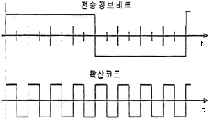
- 1
- 2
- 4
- 8
(정답률: 82%)
69. 우리나라의 3세대 디지털 이동전화에서 사용하는 다원 접속 방식은?
- CDMA(Code Division Multiple Access)
- TDMA(Time Division Multiple Access)
- FDMA(Frequency Division Multiple Access)
- AMPS(Advanced Mobile Phone System)
(정답률: 80%)
70. DMB(Digital Multimedia Broadcast) 시스템에 대한 설명으로 적합하지 않은 것은?
- DMB는 전송수단에 따라 지상파 DMB와 위성 DMB로 구분한다.
- CD 수준의 음질과 데이터 또는 영상서비스가 가능하다.
- 다양한 디지털콘텐츠를 이동중인 휴대단말기 가입자에게만 서비스가 가능하다.
- 고정수신자 및 이동수신자에게 고품질로 제공되는 디지털 멀티미디어 방송서비스를 의미한다.
(정답률: 89%)
71. 다음 중 우리나라에서 사용하고 있는 지상파 디지털 TV 전송 표준은?
- NTSC
- ATSC-T
- DVB-T
- ISDB-T
(정답률: 86%)
72. 다음 중 프로토콜에 관한 설명으로 옳은 것은?
- 통신하는 두 지점 사이에 적용되는 규칙이다.
- 통신 연결에서 상하위 레벨 사이에만 적용된다.
- 소프트웨어 레벨에서만 프로토콜이 적용된다.
- 주로 기술문서 형태로 작성된다.
(정답률: 86%)
73. 다음 중 통신 프로토콜의 주요 특징에 대한 설명으로 틀린 것은?
- Syntax : 데이터 블록의 형식 규정
- Semantics : 에러처리를 위한 제어 정보의 규정
- Timing : 전송속도의 동기나 순서 등의 규정
- Format : 프로토콜의 각 상태의 동작 규정
(정답률: 88%)
74. 다음 중 계층과 관련기술을 잘못 짝지은 것은?
- 물리계층 - DTE/DCE
- 데이터링크 계층 - HDLC
- 네트워크 계층 - LDAP
- 전달계층 - TCP
(정답률: 70%)
75. 다음 중 상위의 계층에서 주어진 정보를 공통으로 이해할 수 있는 표현 형식으로 변환하는 기능을 제공하는 계층은?
- 네트워크 계층
- 세션 계층
- 표현 계층
- 응용 계층
(정답률: 87%)
76. 다음 중 모바일 IP의 구성요소가 아닌 것은?
- 모바일 노드
- 홈 에이전트
- 외부 에이전트
- 무선 랜카드
(정답률: 78%)
77. 저주파 전력증폭기의 출력측 기본파 전압이 80[V], 제2, 제3고조파 전압이 각각 8[V], 6[V] 라면 왜율은 얼마인가?
- 12.5 [%]
- 16.5 [%]
- 25.0 [%]
- 33.0 [%]
(정답률: 80%)
78. 다음 중 무선통신시스템의 유지보수 기능이 아닌 것은?
- 무선통신망 보안관리 기능
- 무선통신망 상태관리 기능
- 무선통신망 고장관리 기능
- 무선통신망 고객관리 기능
(정답률: 89%)
79. 다음 중 부표 등에 탑재되어 위치 또는 기상 자료 등을 자동으로 송출하는 무선 설비는?
- 텔레미터(Telemeter)
- 라디오 부이(Radio Buoy)
- 라디오존데(Radiosonde)
- 트랜스폰더(Transponder)
(정답률: 92%)
80. 다음 중 잡음방해와 개선 방법으로 적합하지 않은 것은?
- 수신 전력을 크게 한다.
- 수신기의 실효대역폭을 넓게 한다.
- 적절한 통신방식을 선택한다.
- 송신전력을 크게 하고 수신기를 차폐한다.
(정답률: 86%)
5과목: 전자계산기 일반 및 무선설비기준
81. 다음 중 자기 디스크의 특징이 아닌 것은?
- 자기 드럼보다 Access Time이 빠르다.
- 자기 드럼보다 기억용량이 매우 크다.
- 각각의 트랙에는 데이터가 고정 크기의 블록 단위로 저장된다.
- 고속, 대용량의 보조기억장치로 널리 이용된다.
(정답률: 68%)
82. 2진수 10111011에 대해 BCD 코드로 변환하고, 이를 3-초과 코드와 그레이 코드로 표현한 것으로 옳은 것은?
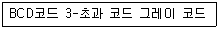
- 0001 1000 0111 : 0100 1011 1010 : 0001 1010 0100
- 0001 1000 0111 : 0100 1011 1100 : 0001 1010 0100
- 0001 1000 0111 : 0100 1011 1010 : 0001 1100 0100
- 0001 1000 0111 : 0100 1011 1100 : 001 1100 1001
(정답률: 62%)
83. 두 2진수 A, B에 대하여, 'A-B'는 다음의 어느 연산과정과 같은가? (단, 2진수는 2의 보수로 표현한다.)
- 각 A의 비트 값들에 NOT 연산을 한 후 B를 더한다.
- 각 B의 비트 값들에 NOT 연산을 한 후 A를 더한다.
- 각 A의 비트 값들에 NOT 연산을 한 후 B를 더하고 1을 더한다.
- 각 B의 비트 값들에 NOT 연산을 한 후 A를 더하고 1을 더한다.
(정답률: 65%)
84. 다음 문장이 설명하는 시스템은 무엇인가?
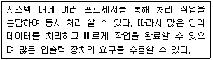
- 병렬 처리 시스템
- 혼합 시스템
- 데이터 시스템
- 직렬 시스템
(정답률: 89%)
85. 다음 문장의 괄호 안에 들어갈 용어는?
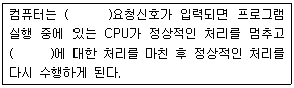
- Recursive
- DUMP
- DMA
- Interrupt
(정답률: 92%)
86. 메모리 인터리빙(Memory Interleaving)의 사용 목적은?
- 메모리의 저장 공간을 높이기 위해서
- CPU의 Idle Time을 없애기 위해서
- 메모리의 Access 횟수를 줄이기 위해서
- 명령들의 Memory Access 충돌을 막기 위해서
(정답률: 72%)
87. 디스크를 사용하려면 최초에 반드시 해야 할 사항은 무엇인가?
- 내용을 삭제 후 잠근다.
- 파티션을 만들고 포맷한다.
- 폴더와 파일들로 채운다.
- 시분할(Time Slice) 한다.
(정답률: 91%)
88. 운영체제에서 폴더와 파일들은 어떤 구조로 구성되어 있는가?
- 트리(Tree)
- 큐(Queue)
- 스택(Stack)
- 배열(Array)
(정답률: 80%)
89. 다음 중 기계어로 번역된 프로그램은?
- 목적 프로그램(Object Program)
- 원시 프로그램(Source Program)
- 컴파일러(Compiler)
- 로더(Loader)
(정답률: 83%)
90. 다음 중 설명이 틀린 것은?
- 하드웨어가 이해할 수 있는 언어를 기계어라고 부른다.
- 기계어에 대응되어 만들어는 어셈블리어는 각각 다르다.
- C, PASCAL, FORTRAN 등은 고급언어이다.
- 어셈블리어는 기계어라고 부른다.
(정답률: 77%)
91. 특정한 주파수를 이용할 수 있는 권리를 특정인에게 부여하는 것은 무엇인가?
- 주파수분배
- 주파수할당
- 주파수지정
- 주파수부여
(정답률: 79%)
92. 심사에 의한 주파수할당시 고려사항과 거리가 먼 것은?
- 전파자원 이용의 효율성
- 전파자원 이용의 편리성
- 신청자의 재정적 능력
- 신청자의 기술적 능력
(정답률: 56%)
93. 다음 중 무선국이 갖추어야 할 개설조건에 속하지 않는 것은?
- 통신사항이 개설목적에 적합할 것
- 개설목적의 달성에 필요한 최소한의 공중선전력을 사용할 것
- 무선설비는 선박의 항행에 지장을 주지 아니하는 장소에 설치할 것
- 이미 개설되어 있는 다른 무선국의 운용에 지장을 주지 아니할 것
(정답률: 70%)
94. 전파법에 따라 적합성평가를 받은 기자재를 적합성평가 기준대로 조사 또는 시험하는 행위는 다음 중 어느 것에 해당되는가?
- 사전관리
- 사후관리
- 인증관리
- 기기관리
(정답률: 72%)
95. 송신설비의 공중선 등 고압전기를 통하는 장치는 사람이 보행하거나 기거하는 평면으로부터 몇 미터 이상의 높이에 설치하여야 하는가?
- 2[m]
- 2.5[m]
- 3[m]
- 3.5[m]
(정답률: 87%)
96. 다음 중 적합등록 대상기자재는?
- 디지털 선택호출 전용수신기
- 이동가입무선전화장치
- 수색구조용 위치정보 송신장치의 기기
- 네비텍스 수신기
(정답률: 54%)
97. 전자파 장해를 일으키는 기자재가 ‘전자파 적합’의 판정을 받으려면 다음 중 어느 기준에 적합하여야 하는가?
- 전기통신설비에 관한 기술기준
- 정보통신기기 인증규칙
- 전자파장해 방지기준
- 전자파강도 측정기준
(정답률: 85%)
98. 주파수허용편차에 대하여 올바르게 설명한 것은?
- 일반적으로 백분율로 표시한다.
- 전파를 발사하는 발사전력의 99[%]를 포함하는 주파수
- 주어진 발사에서 용이하게 식별되고 측정할 수 있는 주파수
- 발사에 의하여 점유하는 주파수대의 중심주파수와 지정주파수 사이에서 허용 될 수 있는 최대편차
(정답률: 83%)
99. 무선설비 각 공사에 있어서 기술적 공법, 작업방법 등 공사 특별사항을 작성한 시방서를 무엇이라고 하는가?
- 공사시방서
- 표준시방서
- 전문시방서
- 특별시방서
(정답률: 85%)
100. 다음 중 감리사의 주요 임무 및 책임사항으로 옳지 않은 것은?
- 감리사는 설계감리 업무를 수행함에 있어 발주자와 계약에 따라 발주자의 설계감독 업무를 수행한다.
- 감리사는 해당 설계용역의 설계용역 계약문서, 설계감리 과업내용서, 그 밖의 관계 규정 내용을 숙지하고 해당 설계용역의 특수성을 파악한 후 설계감리 업무를 수행하여야 한다.
- 감리사는 설계용역 성과검토를 통한 검토업무를 수행하기 위해 세부 검토사항 및 근거를 포함한 설계감리 검토목록을 작성하여 관리하여야 한다.
- 감리사는 설계자의 의무 및 책임을 면제시킬 수 있으며, 임의로 설계용역의 내용이나 범위를 변경시키거나 기일 연장 등 설계용역 계약조건과 다른 지시나 결정을 하여서는 안 된다.
(정답률: 90%)